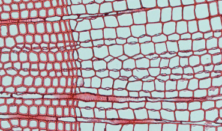
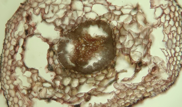
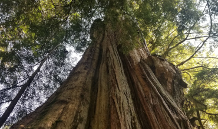
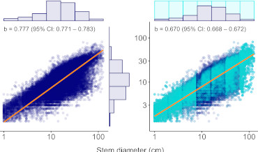
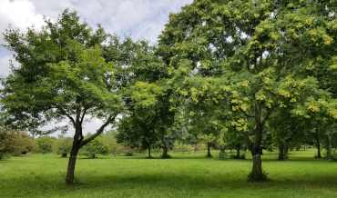

How do physical factors shape axial xylem morphology?
Xylem conduit morphology is shaped by two fundamental constraints imposed by vertical sap transport: minimizing hydraulic resistance and preventing conduit wall collapse.
Nehemiah Grew observed that roots have wider conduits than stems nearly 350 years ago, and there has been much research since showing that conduits widen predictably from tips of plants to their base in order to minimize resistance.
But what about conduit reinforcement, or the ratio of double wall thickness to conduit diameter?
Thickness-to-span ratio should decrease from tip to base, in tandem with water potential.
My PhD advisor, Sean Michaletz, and I, show that both of these patterns occur in trees, and that thickness-to-span ratios are nearly always higher than the critical collapse limit predicted by a hydraulic model.
This work is currently in preparation, with aim to submit it to New Phytologist for publication.

Freeze-thaw embolism or freezing lysis? What is the root cause of yellow-cedar decline?
Freeze-thaw cycles may injure plant organs through embolism formation (i.e., reduction of sap flow and consequent physiological stress) or direct freezing injuries (i.e., by causing cell lysis through the formation of ice crystals).
It is hypothesized that yellow-cedar roots are particularly sensitive to freeze-thaw cycles when snowpack is absent. However, the mechanism of injury is poorly understood. This work aims at testing which of these mechanisms (freeze-thaw embolism and cell lysis) is likely responsible for yellow-cedar decline. The work is currently in preparation, with aim of submitting it for publication in the journal New Phytologist.
How does loss of snowpack affect tree hydraulic functioning?
Yellow-cedar, a culturally and economically significant tree species native to the Pacific Northwest region of North America, is currently experiencing significant climate change-induced decline. With ~4,000 sq. km of yellow-cedar forests affected across Alaska and British Columbia, this decline poses a serious threat to the ecological and socio-economic stability of the region. It is hypothesized that regional warming is leading to loss of insulating snowpack in yellow-cedar habitats, which exposes their roots to lethal freezing injuries. Yet, the exact nature of these injuries, and the sequence of physiological effects they trigger leading to whole-plant death, remain poorly understood. Additionally, neighboring tree species do not appear to be experiencing similar patterns of decline, highlighting the need for species-specific research.
To address these knowledge gaps, My PhD advisor, Sean Michaletz, and I, initiated a study in the North Shore mountains of British Columbia. During the winter of 2022-2023, I actively removed snowpack surrounding half of the individuals of five species of trees, including yellow-cedar. By monitoring patterns of water transport and photosynthesis in yellow-cedars and neighboring species, we aim to identify the effects of snowpack removal and species-specific differences, such as unique effects on yellow-cedars. This research will provide critical insight into the mechanism by which snowpack loss is leading to physiological decline in yellow-cedars and will shed light on why neighboring species are not experiencing similar patterns of decline. The findings from this study will inform conservation efforts and assist in developing targeted strategies to mitigate the effects of climate change on yellow-cedar and other vulnerable tree species.
This work is currently in preparation, with aim of submitting it to Global Change Biology for publication.

From tropics to treeline: MST and plant mortality.
I am collaborating with the folks from The Forest MacroSystems Network
on a project aimed at expanding Metabolic Scaling Theory for predicting global plant mortality. This work is led by Isaac Borrego and is currently in review at Ecology Letters.

A novel method of balancing datasets via bootstrapping
Much of ecology is focused on quantifying scaling relationships using empirical data and comparing results across datasets or with theoretical predictions.
This is typically accomplished by fitting linear models to log-transformed data, estimating the slope (often representing scaling exponents or exponential rate constants) and 95% confidence intervals (CIs), and evaluating whether these CIs include empirical or theoretical values.
The accuracy of slope estimates depends critically on the distribution of data across the range of the abscissa.
When data are unevenly distributed, with observations concentrated in some portions of the range, slope and CI estimates become biased toward regions of higher data density.
This imbalance increases the risk of type I or II errors, potentially leading to erroneous conclusions about the agreement of data with empirical or theoretical expectations.
We introduce a novel bootstrapping approach to address data imbalance in biological scaling analyses that improves the accuracy of slope and CI estimates.
This method enables more precise comparisons with both empirical and theoretical values.
This work (coauthored by Sean Michaletz) is currently in review in Global Ecology and Biogeography.

Size and functional traits modulate urban tree performance and capacity for delivering ecosystem services.
Recent empirical work by Gibert et al. 2016 and theoretical work by Falster et al. 2018
postulates that the relationship between functional traits and plant performance is strongly modulated by plant size. My MSc advisor, Kevin Mueller, and I, tested this hypothesis in an urban setting, and found strong support for it.
Moreover, we found a strong relationship between key functional traits (e.g., LDMC and wood density) and ecosystem services such as C sequestration, suggesting that the trait-performance framework can be applied to solve practical problems such as maximizing tree-based ecosystem services in urban areas.
This work has been published in the journal Functional Ecology and can be accessed here. Data collection on this project is ongoing, so stay tuned for more!
{kind=link}
{kind=link}
{kind=link}
{kind=link}
{kind=link}
{kind=link}